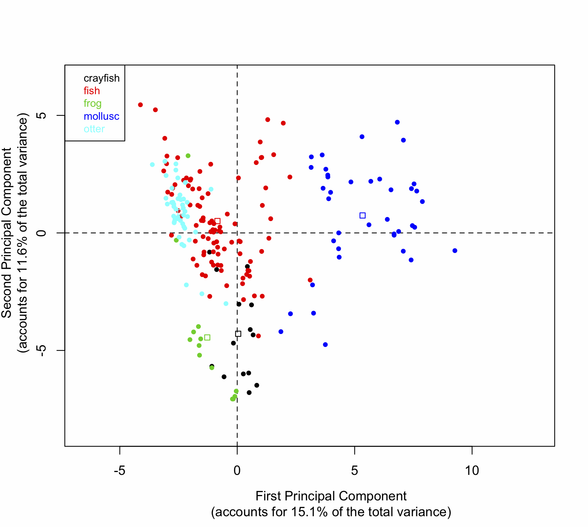
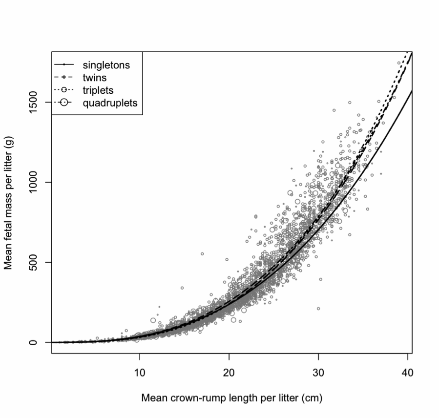

Environmental Sciences
River Otters in Illinois
Tracking Toxins in the Watershed
Link to
publication.
Working with a team of scientists at the
Illinois Natural History Survey, (part of
the Prairie Research Institute at the University of Illinois at Urbana-Champaign),
PRA principal, Damian Satterthwaite-Phillips provided statistical support, and aided in
research on levels of various toxic chemicals in Illinois' watersheds. Some of these
chemicals come from pesticides (some of which have been illegal for several decades)
and some of their byproducts, while others are common in electronics and transformers.
Because these chemicals accumulate up the food chain, predators such as otters tend to accumulate higher amounts of these toxins than other organisms, and are hence known as "sentinel species" because they register dangerous levels of toxins sooner than other species.
We compared toxin levels in otter livers today to those reported 25-30 years ago. Surprisingly, we found levels of dieldrin, a toxic byproduct of some pesticides, are higher now than they were 30 years ago, even though those products have been banned for about 25 years. In fact, the levels of dieldrin found in Illinois are higher than those ever reported anywhere else in the US.
Statistical Highlights
 We did not have the raw data from the earlier research, only means and standard
deviations. Using kernel density estimates of the distributions of the toxins in the
population today, we assumed that the shape of the distribution was similar 25-30 years
ago. We therefore simulated the earlier distribution as identical in shape to the
modern distribution, but with a shifted mean to match the known data. By doing
repeated random samplings from the simulated distrubution, we confirmed that the
simulated data matched the published data's standard deviations, suggesting the
simulated distribution was a good match. By doing thousands of bootstrapped samplings
from the simulated distribution that mimicked the sample size in the earlier study, we
were able to produce a 95% confidence interval of the mean levels of toxins in the
earlier study, and determine if they differed significantly from the mean levels seen
today.
We did not have the raw data from the earlier research, only means and standard
deviations. Using kernel density estimates of the distributions of the toxins in the
population today, we assumed that the shape of the distribution was similar 25-30 years
ago. We therefore simulated the earlier distribution as identical in shape to the
modern distribution, but with a shifted mean to match the known data. By doing
repeated random samplings from the simulated distrubution, we confirmed that the
simulated data matched the published data's standard deviations, suggesting the
simulated distribution was a good match. By doing thousands of bootstrapped samplings
from the simulated distribution that mimicked the sample size in the earlier study, we
were able to produce a 95% confidence interval of the mean levels of toxins in the
earlier study, and determine if they differed significantly from the mean levels seen
today.
The image at the left shows the distribution estimated from our data. The axis at the bottom shows the concentration of the chemical (here: heptachlor epoxide) in parts per billion, and the ticks indicate our actual data points. The axis at the top is rescaled to simulate the earlier data, such that the mean matches that of the earlier publication.
Other scientists involved in this project: Samantha K Carpenter, Nohra E Mateus-Pinilla, Nelda Rivera (Illinois Natural History Survey, UIUC), Kuldeep Singh (College of Veterinary Medicine, UIUC), Andreas Lehner (Diagnostic Center for Population and Animal Health, Michigan State University), Robert Bluett (Illinois Department of Natural Resources), Jan E Novakofski (Animal Sciences, UIUC).
Inferring Diet from fat composition
Link to publication.
River otters have recently been reintroduced to much of Illinois and the Midwest after
being wiped out from these areas during the 1800s. However, because they have been
absent from this region for so long, little is known about their diet in this region.
In other regions, studies of otter stomach contents and scats (feces), indicate that they consume large amounts of fish, as well as crayfish, frogs, and various other amphibians, reptiles, and occasionally birds, and other mammals. While otters are occasionally seen eating shellfish, little was known about how much they contribute to the otter diet, because the contents are more fully digested and do not show up in scats, and are difficult to identify from stomach contents.
PRA principal, Damian Satterthwaite-Phillips led a research project that demonstrated that the different taxa in the otter diet have unique fatty acid signatures. By comparing the fatty acids found in otter fat with those found in different prey species, the otter diet can be inferred to a very close approximation. We discovered that shellfish make up a much larger portion of the diet than previously suspected. This is important in areas of Illinois where there is high mussel diversity and many of the species are endangered. These findings can aid wildlife managers in protecting endangered mussels.
Statistical Highlights
The image to the left shows the relative proportion of different fatty acids found in
different taxonomic groups, as determined from gas-liquid chromatography. The
different fatty acids are indicated along the x-axis. Chromatography works by
separating different molecules (in this case, fatty acids). The fatty acids have
different molecular weights, typically causing the heavier molecules to pass through
the chromatograph more slowly. However, there is some variation in retention time for
each sample, creating some ambiguity as to the identity of each molecule. From other
literature published on fatty acids, we knew how many unique fatty acids should be
present. By running a k-means clustering algorithm, we were able to determine which
molecules in each sample had the highest probability of matching the identity of the
molecules in a standard with known fatty acids.
 Principal components analysis (PCA) is a method that takes high-dimensional data, and projects those data onto fewer dimensions in a way that maximally preserves the variation between variables. As an analogy, consider a 3-dimensional object like an umbrella, and the lower (2) dimensional shadow that it casts. Turned one direction, the shadow may only appear as a circle, but turned another, the whole profile of the umbrella is apparent. PCA acts similarly to the second case--preserving the maximum amount of variability, while simultaneously reducing the dimensionality. The image to the left shows the PCA for different animal species. The original variables were the percentages of each of the 60 fatty acids analyzed. This 60-dimensional data is projected is shown here projected onto just 2 dimensions (principal components), that preserve the most variation. This allows us to see which species are more similar to each other in terms of their fatty acid profiles. For example, the otters (light blue points) largely overlap with the fish (red), indicating that fish and otters have fairly similar fatty acid compositions. Molluscs (dark blue), by contrast, form a separate cluster, indicating a rather different fatty acid profile.
Quantitative fatty acid signature analysis is a method developed by Professor Sara Iverson and her colleagues. It is based on the idea that a predator's fatty acid profile is more or less representative of its diet, when corrected for the fact that different prey species in the diet have different fat content. (In our study, mussel species were typically much fattier than crayfish, for example.) Using their methods, we made use of an optimization routine (a "hill-climbing" algorithm, also known as "gradient-descent") that found the most probable proportion of each type of prey species in the otter diet.
This research determined that shellfish make up a considerably larger part of the otter diet than previously suspected. In areas like Illinois, where otters have been successfully reintroduced, this information is important, because there is high shellfish diversity in some regions, and many of the local species are endangered. The findings from this research will allow wildlife managers to better protect those endangered species (for instance, by limiting otter trapping to those areas where shellfish are at the highest risk).
Other scientists involved in this project: Jan E Novakofski (Animal Sciences, UIUC), Nohra E Mateus-Pinilla (Illinois Natural History Survey, UIUC).
White-Tailed Deer in Illinois
Disease-Control and Population Dynamics
(This research is still in progress, but an interim report is available here [p. 4 - 5].)
In northern Illinois, chronic wasting disease was first identified in the white-tailed deer population in 2002. Chronic wasting disease (CWD) is similar to "Mad Cow" disease, and if left unchecked, could potentially wipe out the entire herd. Additionally, while the chance of transmission to humans is small, there is no cure for the disease, and it is always fatal. In order to prevent the disease from spreading, the Illinois Department of Natural Resources (IDNR) implemented a sharp-shooting program, aimed at decreasing the population density in areas where CWD has been known to occur.
In a cooperation with IDNR, PRA principal, Damian Satterthwaite-Phillips has been working with a team of researchers in the Department of Animal Science, and the Illinois Natural History Survey at the University of Illinois at Urbana-Champaign. Because white-tailed deer are both an important part of the local ecosystem, and an important source of revenue to the state, we are closely monitoring the effects of the sharp-shooting program on reproduction and population dynamics.
From all female deer that were culled in the sharp-shooting program, we track various statistics including the location and date of culling, the age of the deer, whether or not the deer was CWD-positive, the number of fetuses present, and length and mass measurements of all fetuses. We also track the intensity of the sharp-shooting in each area each year. With 8 consecutive years of data, we have been able to determine correlations between the intensity of the sharp shooting and various measures of reproduction, such as fecundity (measured by both the percentage of deers that are pregnant, and the average number of fetuses per doe), and fetal mass (which in turn is a good predictor of whether the newborn will survive its first year), which are indicators of the herd health. While this research is still in progress, the findings so far indicate that the sharp shooting is having minimal effects on the deer population, suggesting that this is an effective strategy for controlling the disease while simultaneously protecting the long-term health of the entire herd.
Statistical Highlights
In Illinois, the female white-tailed deer all become fertile and conceive at
approximately the same time, so fetal development is also at the same stage for all
pregnant deer at any given point in time. Because this research depends on successful
detection of fetuses, we were concerned that detection may be poor in the earliest
stages of pregnancy when the fetuses were still quite small. The graph at the left
plots the percentage of deer found with fetuses as a function of the number of days
counting from the new year. To these data we fit the best sigmoid curve, which begins
to level off at about 30 days into the new year, indicating that prior to that point,
a considerable portion of fetuses escaped detection. Hence we did not rely on any data
prior to this cutoff, as it would likely bias our results.
 One of the metrics we look at as an indicator of both the mother's nutritional health, and the likelihood that the newborn fawn will survive, is the mass of the fetus. However because fetuses grow, they are, on average, heavier later in gestation. By plotting the fetal lengths against their masses, we fit an exponential function to the data that allows us to understand how mass and length relate to each other over time, and correct for this variation.
In the course of this research, we are also modeling the effects of sharp-shooting intensity on the percentage of deer in each age class (fawn, yearling, or adult), the percentage of deer found pregnant, the number of fetuses per pregnancy, and the robustness of the fetuses (derived from the mass and length measurements). Using various types of linear models, we control for other covariates, such as the geographic region (some areas may provide better habitat and nutrition), the year (colder years may also be responsible for decreased fertility), the age of the pregnant deer (older deer typically have larger litters), etc.
Other scientists involved in this research: Nohra Mateus-Pinilla (Illinois Natural History Survey, UIUC), Mary Beth Manjerovic, Michelle L. Green (Illinois Natural History Survey and Animal Sciences, UIUC), Jan Novakofski (Animal Sciences, UIUC).
The Role of Heavy Metals in Chronic Wasting Disease
(This research is currently under peer-review for publication. A link will be provided when published.)
Chronic wasting disease (CWD) is a prion disease found in cervid species such as deer and elk. CWD is similar to bovine spongiform encephalopathy ("Mad Cow" disease) in cattle, scrapie in sheep, and Creutzfeld-Jacob disease and kuru in humans. The disease is caused by a misfolded protein found in the nervous system. The misfolded protein is infectious, and causes other proteins to misfold, ultimately leading to a chain reaction of misfoldings that results in the deterioration of the nervous tissue. In deer, the disease is thought to be transmissible through saliva, urine, and feces, and is always fatal.
There are likely many factors that contribute to a deer's susceptibility to CWD, including the amounts of different essential nutrients in the diet. For example, the protein that may become infectious typically bonds with a copper atom (cofactor), and the bonds help the protein to keep its shape. When there is insufficient copper in the diet, other metals such as magnesium may replace the copper in the protein. However, the bonds formed with magnesium appear to be weaker and may leave the protein more susceptible to misfolding and becoming infectious.
PRA principal, Damian Satterthwaite-Phillips has been providing statistical support to a group of veterinarians and scientists at the Illinois Natural History Survey (INHS) at the University of Illinois at Urbana-Champaign (UIUC). This research is aimed at detecting differences in the concentrations of different metals in diseased and healthy deer, while correcting for other possible sources of variation such as sex, age, and variation in the mineral content of the soils in different regions, as well as providing baseline measurements of these metals in healthy deer. These finding will aid in the understanding of CWD epidemiology, and may suggest methods for controlling CWD, such as providing mineral fortified salt licks in regions where certain nutrients are poor.
Other scientists involved in this research: Nelda Rivera, Nohra Mateus-Pinilla (INHS, Natural Resources and Environmental Sciences, UIUC), Jan Novakofski (Animal Sciences, UIUC), Hsin-Yi Weng (Comparative Pathobiology, Purdue University), Amy Kelly (INHS, UIUC), Marilyn Ruiz (Pathobiology, UIUC)
Social Sciences
Anthropology
Women's Labor, Marriage Mobility, and Footbinding in China
Linguistics
Language Families
Documenting and Preserving Endangered Languages
Governmental Work
Planning
Balancing Economic Development and Subsistence Hunting and Gathering in the Northwest Arctic Borough
Link to draft methods paper for publication.
Link to more detailed in-house
methods document.